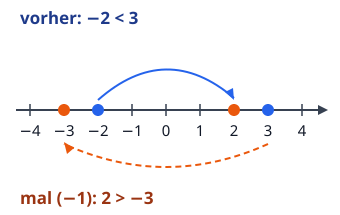

Ungleichungen lösen
Mit einem KI-Tutor lernen
Ein KI-Tutor erklärt dir diese Seite und hilft dir bei den Aufgaben. Wähl deinen Assistenten:
Mit Claude öffnen Mit ChatGPT öffnen Mit Mistral Vibe öffnen
Du nutzt dein eigenes Konto beim Anbieter. Der Assistent ist kein Angebot von lernapps.net: lernapps liefert nur Inhalte und Aufgaben. Die Wahl gilt für alle Seiten, nur auf diesem Gerät.
Ziel: Ich kann eine Ungleichung lösen und weiß, wann sich das Zeichen dreht. Du rechnest fast genauso wie bei den Gleichungen – mit einer Ausnahme, die du gleich selbst entdeckst.
Probier zuerst
Aufgabe
Lösung
2 > −3 richtige Antwort
2 liegt rechts von −3.
2 < −3
−3 liegt links von 2, ist also kleiner.
2 = −3
2 und −3 sind verschiedene Zahlen.
Nach dem Mal (−1) hat sich das Zeichen gedreht.
Wann sich das Zeichen dreht
Eine Ungleichung vergleicht zwei Seiten mit (kleiner), (größer), (kleiner oder gleich) oder (größer oder gleich). Mal spiegelt jede Zahl an der 0. Dabei tauschen die Zahlen ihre Reihenfolge – genau das hast du oben gesehen.

Vorher liegt die −2 links von der 3, danach liegt die 2 rechts von der −3.
Quelle: eigene Zeichnung. Lizenz: CC-BY-4.0.Du löst eine Ungleichung mit denselben Schritten wie eine Gleichung. Addieren und Abziehen ändern das Zeichen nie, Malnehmen und Teilen mit einer positiven Zahl auch nicht. Nur wenn du mit einer negativen Zahl malnimmst oder durch sie teilst, drehst du das Zeichen: aus wird , aus wird .
Die Lösung sind alle Zahlen größer als −2. Prüf mit einer davon, zum Beispiel x = 0 – stimmt.
Ein Beispiel
x auf beiden Seiten
Löse . Der Haken: Wenn du abziehst, bleibt links eine negative Zahl vor dem x – erst beim Teilen dreht sich das Zeichen, nicht beim Abziehen.
Antwort – Alle Zahlen kleiner oder gleich −4. Probe mit x = −5: links −15, rechts −18, und −15 ≥ −18 stimmt.
Teilen durch eine Minuszahl
Merke
Das Zeichen dreht sich nur beim Malnehmen oder Teilen mit einer negativen Zahl. Wer es vergisst, bekommt genau die falsche Hälfte der Zahlen. Prüf deshalb immer mit einer Zahl aus deiner Lösung.
Jetzt du
Aufgabe
Lösung
Auf beiden Seiten 4 abziehen
Abziehen verschiebt beide Seiten gleich weit.
Auf beiden Seiten 3x abziehen
Auch das ist Abziehen.
Beide Seiten mal 2 nehmen
2 ist positiv. Die Reihenfolge bleibt.
Beide Seiten durch −2 teilen richtige Antwort
Teilen durch eine negative Zahl kehrt die Reihenfolge um.
Nur Malnehmen und Teilen mit einer negativen Zahl drehen das Zeichen.
Aufgabe
Drei Beispielaufgaben, jede mit ihrer Lösung:
Aufgabe Nr. 1
Löse die Ungleichung −2x < 6.
Tipp
Durch welche Zahl teilst du? Ist sie positiv oder negativ?
Lösung
- Beide Seiten durch −2 teilen. −2 ist negativ, also wird aus < ein >.
- Die Lösung ist x > −3.
Richtige Antwort: x > −3
Aufgabe Nr. 2
Löse die Ungleichung −4x < 16.
Tipp
Durch welche Zahl teilst du? Ist sie positiv oder negativ?
Lösung
- Beide Seiten durch −4 teilen. −4 ist negativ, also wird aus < ein >.
- Die Lösung ist x > −4.
Richtige Antwort: x > −4
Aufgabe Nr. 3
Löse die Ungleichung −5x < 25.
Tipp
Durch welche Zahl teilst du? Ist sie positiv oder negativ?
Lösung
- Beide Seiten durch −5 teilen. −5 ist negativ, also wird aus < ein >.
- Die Lösung ist x > −5.
Richtige Antwort: x > −5
Aufgabe
Drei Beispielaufgaben, jede mit ihrer Lösung:
Aufgabe Nr. 1
Löse die Ungleichung 3x + 3 > 5x + 11.
Tipp
Zieh 5x und 3 auf beiden Seiten ab. Welche Zahl steht dann vor dem x?
Lösung
- Auf beiden Seiten − 5x und − 3: Links steht (3 − 5)x, rechts 11 − 3.
- 3 − 5 ist negativ. Beim Teilen dreht sich das Zeichen: x < −4.
Richtige Antwort: x < −4
Aufgabe Nr. 2
Löse die Ungleichung 3x + 3 > 5x + 13.
Tipp
Zieh 5x und 3 auf beiden Seiten ab. Welche Zahl steht dann vor dem x?
Lösung
- Auf beiden Seiten − 5x und − 3: Links steht (3 − 5)x, rechts 13 − 3.
- 3 − 5 ist negativ. Beim Teilen dreht sich das Zeichen: x < −5.
Richtige Antwort: x < −5
Aufgabe Nr. 3
Löse die Ungleichung 5x + 5 > 8x + 8.
Tipp
Zieh 8x und 5 auf beiden Seiten ab. Welche Zahl steht dann vor dem x?
Lösung
- Auf beiden Seiten − 8x und − 5: Links steht (5 − 8)x, rechts 8 − 5.
- 5 − 8 ist negativ. Beim Teilen dreht sich das Zeichen: x < −1.
Richtige Antwort: x < −1
Aufgabe
Lösung
x ≤ 4
8 geteilt durch −2 ist −4.
x ≥ −4
Beim Teilen durch −2 dreht sich ≥ zu ≤.
x ≤ −4 richtige Antwort
−2x ≥ 8, dann durch −2 teilen und das Zeichen drehen.
x ≥ 11
Die 7 wird auf beiden Seiten abgezogen, nicht addiert.
7 − 2x ≥ 15, minus 7: −2x ≥ 8, durch −2: x ≤ −4. Probe mit x = −5: 7 + 10 = 17 ≥ 15.
Aufgabe
Lösung
Richtige Antwort: -6
3x − 6 − 5x > 4, also −2x − 6 > 4, −2x > 10 und x < −5. Die größte ganze Zahl kleiner als −5 ist −6.
Ungleichungen löst du jetzt mit dem richtigen Zeichen. Als Nächstes geht es um Gleichungen, in denen ein Produkt gleich 0 ist.
Fehler gefunden oder eine Idee für diese App?